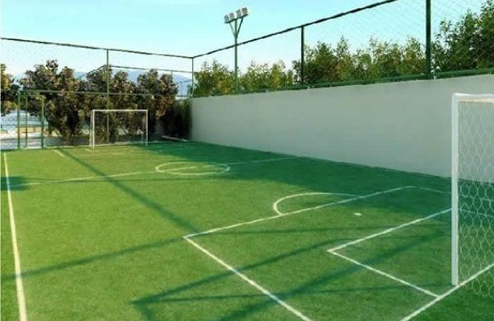
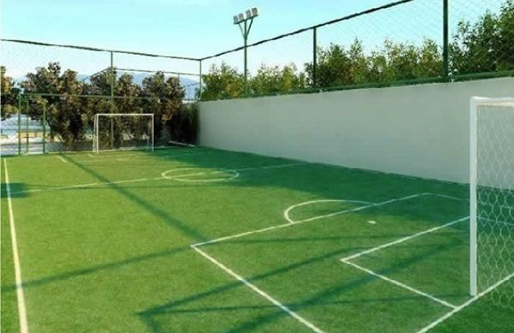
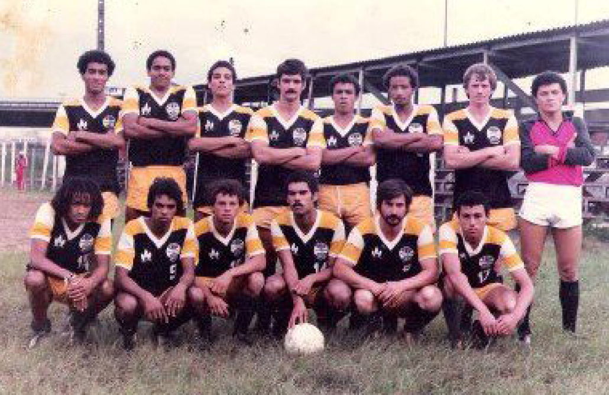
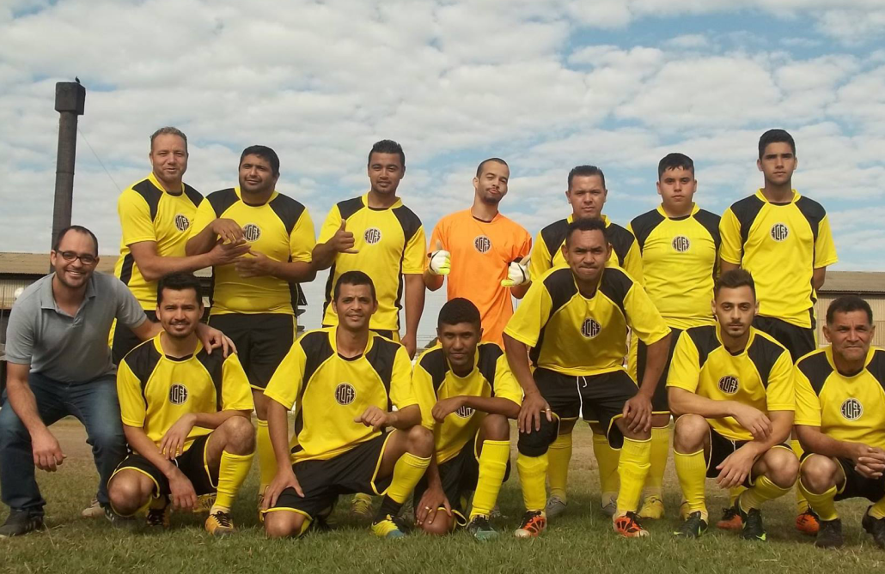
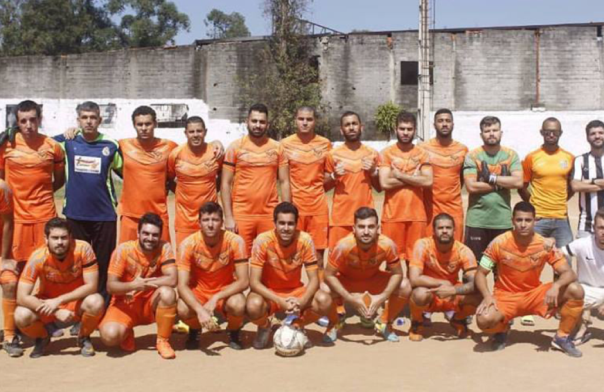
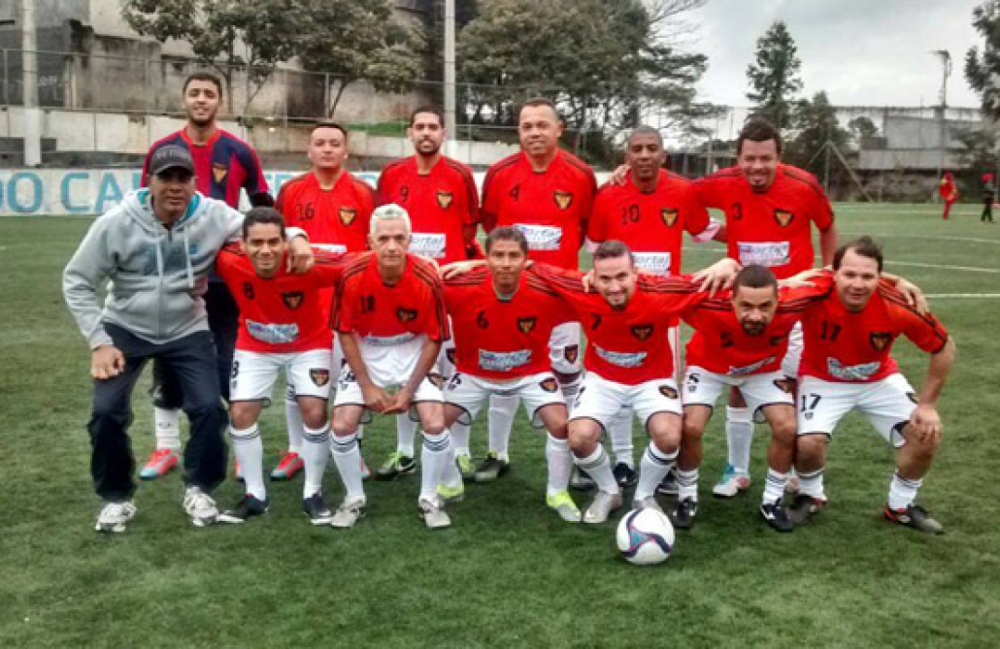

NOTÍCIAS

Juntos com Podpah, Super Copa Pioneer final, Arena Inamar
Premiação recorde, SCP Netshoes em março de 2024

Dias de um torcedor, existem dias em que nos tornamos parte de algo maior

Se liga nos melhores momentos dos jogos CDC

O MEC venceu o Milianos nos pênaltis e se classificou para as semifinais da Super Copa Pioneer Netshoes 2023

A Super Copa Pioneer Netshoes foi destaque na imprensa francesa

Luis Fabiano na Super Copa Pioneer Netshoes

Conquista para todos nós, Seguimos trabalhando para proporcionar a melhor experiência aos nossos torcedores
CAMPOS
 



×


×

TIMES

O Grêmio Recreativo Piraporinha, é um time da zona sul de São Paulo

O União Mooca Esporte Clube, é um time da Zona Leste de São Paulo

O Katatumba é um time de várzea do bairro Guaianases, Zona Leste de São Paulo

O Clube Atlético Lajeado é um time de várzea da Zona Leste de São Paulo

Fala Galera Futebol Clube é um time da Zona Leste de São Paulo

Santa Isabel, é um time da Zona Leste de São Paulo

O Manchester é um time de futebol do centro de São Paulo

O Coruja Esporte Clube é um time da Zona Sul de São Paulo
Resenha
TENTE NÃO RIR: A CHEGADA AO FLAMENGO
Vampeta, um dos jogadores mais carismáticos do futebol brasileiro,
relata
como foi tentar receber seu primeiro salário no Flamengo.
O SALÁRIO DO RONALDO
Vampeta conta a história de quando Ronaldo revelou quanto ganhava por
mês
e fala sobre suas experiências na carreira.
MARCOS NA RESENHA
Marcos conta resenha do Vampeta quando o Palmeiras perdeu o mundial
para
o Manchester.
JÚNIOR CHORAR DE RIR
Marcos conta uma resenha que faz o Júnior chorar de rir sobre a capital
da Venezuela.
CHEGADA DO JÚNIOR
Marcos conta resenha da chegada do Júnior no palmeiro para o lugar do
Roberto Carlos, Marcos chorar de rir ao vê o tamanho de Júnior, baixinho e mirrado, pensando esse,
cara não joga nada.
RESENHA DO GILMAR FUBÁ
Gilmar Fubá conta a resenha do amigo fanho, o carro vai bate, da sua
mãe
na época que ele era criança, o torcedor que passou raiva na arquibancada e a resenha do delegado,
resenhas para você chorar de rir.
FORRÓ DO GÉRSON
Amaral e as suas peripécias confusão com apartheid, refeição de rato e
hotel com Djalminha, Amaral é um daqueles caras que conta as melhores resenhas do futebol, não tem
quem não da risada.
PRIMEIRA VIAGEM
Amaral faz a sua primeira viagem de avião, e os Jogadores fizeram
Amaral
acreditar ter um caixa eletrônico no avião, e quando Amaral vai até o fundo do avião procurar ele da
de cara com a aeromoça que fala que é tudo de graça, os jogadores não aguentam e caem na risada.